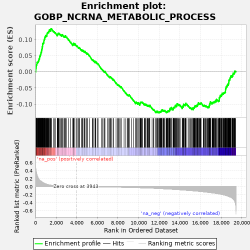
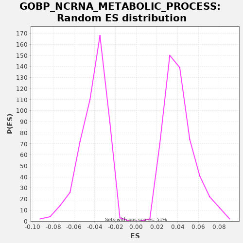

| | | Dataset | X_enriched_genes copy |
| Phenotype | NoPhenotypeAvailable |
| Upregulated in class | na_pos |
| GeneSet | GOBP_NCRNA_METABOLIC_PROCESS |
| Enrichment Score (ES) | 0.1336692 |
| Normalized Enrichment Score (NES) | 3.1932356 |
| Nominal p-value | 0.0 |
| FDR q-value | 1.959226E-5 |
| FWER p-Value | 0.003 |
Table: GSEA Results Summary

Fig 1: Enrichment plot: GOBP_NCRNA_METABOLIC_PROCESS
Profile of the Running ES Score & Positions of GeneSet Members on the Rank Ordered List
| SYMBOL | RANK IN GENE LIST | RANK METRIC SCORE | RUNNING ES | CORE ENRICHMENT | | 1 | RPL11 | 15 | 0.501 | 0.0015 | Yes |
| 2 | RPL7A | 16 | 0.497 | 0.0038 | Yes |
| 3 | RPS9 | 19 | 0.496 | 0.0060 | Yes |
| 4 | RPS2 | 23 | 0.474 | 0.0081 | Yes |
| 5 | FBL | 42 | 0.426 | 0.0094 | Yes |
| 6 | RPL14 | 48 | 0.412 | 0.0115 | Yes |
| 7 | RPL7 | 58 | 0.388 | 0.0133 | Yes |
| 8 | RPS8 | 60 | 0.382 | 0.0155 | Yes |
| 9 | HSD17B10 | 78 | 0.369 | 0.0169 | Yes |
| 10 | RPL35 | 79 | 0.368 | 0.0192 | Yes |
| 11 | RPS14 | 88 | 0.363 | 0.0211 | Yes |
| 12 | RPS15 | 110 | 0.330 | 0.0223 | Yes |
| 13 | RPL26 | 136 | 0.298 | 0.0232 | Yes |
| 14 | RPS16 | 141 | 0.294 | 0.0253 | Yes |
| 15 | EXOSC8 | 142 | 0.294 | 0.0276 | Yes |
| 16 | RPL10A | 175 | 0.264 | 0.0282 | Yes |
| 17 | OSGEP | 181 | 0.260 | 0.0302 | Yes |
| 18 | RPL5 | 229 | 0.236 | 0.0300 | Yes |
| 19 | TSEN34 | 250 | 0.223 | 0.0313 | Yes |
| 20 | WDR18 | 270 | 0.209 | 0.0326 | Yes |
| 21 | PPA2 | 292 | 0.198 | 0.0338 | Yes |
| 22 | EMG1 | 306 | 0.191 | 0.0354 | Yes |
| 23 | RPS25 | 321 | 0.187 | 0.0369 | Yes |
| 24 | ZBTB8OS | 340 | 0.178 | 0.0382 | Yes |
| 25 | RAN | 342 | 0.177 | 0.0405 | Yes |
| 26 | TRMT112 | 385 | 0.164 | 0.0406 | Yes |
| 27 | UTP11 | 392 | 0.161 | 0.0425 | Yes |
| 28 | RPS7 | 393 | 0.159 | 0.0448 | Yes |
| 29 | PIH1D1 | 414 | 0.156 | 0.0461 | Yes |
| 30 | NOP53 | 420 | 0.155 | 0.0481 | Yes |
| 31 | RPF2 | 434 | 0.152 | 0.0497 | Yes |
| 32 | INTS11 | 466 | 0.144 | 0.0504 | Yes |
| 33 | NOP56 | 480 | 0.142 | 0.0520 | Yes |
| 34 | FARSA | 490 | 0.140 | 0.0538 | Yes |
| 35 | EXOSC7 | 514 | 0.136 | 0.0548 | Yes |
| 36 | RPS24 | 527 | 0.134 | 0.0565 | Yes |
| 37 | EXOSC4 | 530 | 0.133 | 0.0587 | Yes |
| 38 | WDR74 | 531 | 0.133 | 0.0610 | Yes |
| 39 | QTRT1 | 578 | 0.124 | 0.0608 | Yes |
| 40 | RPP30 | 584 | 0.123 | 0.0629 | Yes |
| 41 | AIMP2 | 586 | 0.123 | 0.0651 | Yes |
| 42 | IMP3 | 597 | 0.120 | 0.0669 | Yes |
| 43 | FCF1 | 607 | 0.119 | 0.0687 | Yes |
| 44 | RBFA | 626 | 0.115 | 0.0700 | Yes |
| 45 | DDX56 | 633 | 0.113 | 0.0720 | Yes |
| 46 | LAGE3 | 649 | 0.110 | 0.0735 | Yes |
| 47 | RPP25L | 653 | 0.109 | 0.0756 | Yes |
| 48 | AIMP1 | 659 | 0.108 | 0.0777 | Yes |
| 49 | RPL35A | 677 | 0.106 | 0.0791 | Yes |
| 50 | RPS19 | 685 | 0.105 | 0.0810 | Yes |
| 51 | AARSD1 | 688 | 0.105 | 0.0832 | Yes |
| 52 | TBL3 | 690 | 0.104 | 0.0854 | Yes |
| 53 | EXOSC5 | 706 | 0.102 | 0.0869 | Yes |
| 54 | MRTO4 | 718 | 0.099 | 0.0886 | Yes |
| 55 | SSB | 759 | 0.094 | 0.0888 | Yes |
| 56 | RPS28 | 786 | 0.090 | 0.0897 | Yes |
| 57 | EBNA1BP2 | 791 | 0.089 | 0.0918 | Yes |
| 58 | NPM3 | 809 | 0.086 | 0.0932 | Yes |
| 59 | LYAR | 821 | 0.085 | 0.0949 | Yes |
| 60 | UTP4 | 824 | 0.084 | 0.0971 | Yes |
| 61 | NHP2 | 836 | 0.082 | 0.0988 | Yes |
| 62 | RRP9 | 857 | 0.080 | 0.1000 | Yes |
| 63 | RPUSD3 | 872 | 0.078 | 0.1016 | Yes |
| 64 | RPP40 | 890 | 0.075 | 0.1030 | Yes |
| 65 | DARS2 | 894 | 0.074 | 0.1051 | Yes |
| 66 | DKC1 | 916 | 0.072 | 0.1063 | Yes |
| 67 | RPP38 | 921 | 0.071 | 0.1084 | Yes |
| 68 | RPS17 | 960 | 0.068 | 0.1086 | Yes |
| 69 | EIF6 | 974 | 0.067 | 0.1103 | Yes |
| 70 | TARS2 | 976 | 0.067 | 0.1125 | Yes |
| 71 | METTL5 | 1044 | 0.060 | 0.1113 | Yes |
| 72 | PUS3 | 1045 | 0.060 | 0.1135 | Yes |
| 73 | DALRD3 | 1110 | 0.054 | 0.1125 | Yes |
| 74 | MRM3 | 1116 | 0.054 | 0.1145 | Yes |
| 75 | FARS2 | 1117 | 0.054 | 0.1168 | Yes |
| 76 | NSA2 | 1121 | 0.053 | 0.1189 | Yes |
| 77 | EIF4A3 | 1155 | 0.050 | 0.1195 | Yes |
| 78 | FARSB | 1163 | 0.049 | 0.1214 | Yes |
| 79 | LCMT2 | 1196 | 0.047 | 0.1220 | Yes |
| 80 | RTRAF | 1229 | 0.044 | 0.1226 | Yes |
| 81 | WDR55 | 1270 | 0.042 | 0.1228 | Yes |
| 82 | PRKRA | 1278 | 0.041 | 0.1247 | Yes |
| 83 | TRMT1 | 1302 | 0.040 | 0.1258 | Yes |
| 84 | PUS1 | 1324 | 0.039 | 0.1270 | Yes |
| 85 | ISG20 | 1327 | 0.039 | 0.1291 | Yes |
| 86 | CTU2 | 1352 | 0.038 | 0.1302 | Yes |
| 87 | DCAF13 | 1420 | 0.034 | 0.1289 | Yes |
| 88 | TRMU | 1482 | 0.031 | 0.1280 | Yes |
| 89 | PSTK | 1486 | 0.031 | 0.1301 | Yes |
| 90 | DTD1 | 1487 | 0.031 | 0.1324 | Yes |
| 91 | ERI3 | 1508 | 0.031 | 0.1337 | Yes |
| 92 | ADAT2 | 1556 | 0.029 | 0.1335 | No |
| 93 | YARS2 | 1744 | 0.023 | 0.1259 | No |
| 94 | MRPS11 | 1826 | 0.021 | 0.1240 | No |
| 95 | RPL27 | 1916 | 0.020 | 0.1216 | No |
| 96 | PUSL1 | 2111 | 0.016 | 0.1137 | No |
| 97 | MRM1 | 2132 | 0.016 | 0.1149 | No |
| 98 | TFB1M | 2145 | 0.016 | 0.1166 | No |
| 99 | EXOSC9 | 2174 | 0.016 | 0.1174 | No |
| 100 | TSR3 | 2199 | 0.015 | 0.1184 | No |
| 101 | TRMT5 | 2216 | 0.015 | 0.1198 | No |
| 102 | BUD23 | 2263 | 0.014 | 0.1197 | No |
| 103 | NOP10 | 2356 | 0.013 | 0.1172 | No |
| 104 | NUDT16 | 2441 | 0.012 | 0.1150 | No |
| 105 | RARS2 | 2523 | 0.011 | 0.1131 | No |
| 106 | CARS2 | 2572 | 0.010 | 0.1128 | No |
| 107 | MTFMT | 2580 | 0.010 | 0.1148 | No |
| 108 | WDR46 | 2611 | 0.010 | 0.1155 | No |
| 109 | RPS21 | 2758 | 0.009 | 0.1101 | No |
| 110 | POP4 | 2817 | 0.008 | 0.1093 | No |
| 111 | MRPL44 | 2861 | 0.008 | 0.1093 | No |
| 112 | TSEN2 | 2890 | 0.007 | 0.1102 | No |
| 113 | THUMPD2 | 2902 | 0.007 | 0.1119 | No |
| 114 | EARS2 | 3032 | 0.006 | 0.1074 | No |
| 115 | DUS2 | 3208 | 0.005 | 0.1005 | No |
| 116 | MTERF4 | 3416 | 0.003 | 0.0919 | No |
| 117 | TRPT1 | 3618 | 0.002 | 0.0836 | No |
| 118 | GATB | 3649 | 0.002 | 0.0843 | No |
| 119 | DTWD1 | 3661 | 0.002 | 0.0860 | No |
| 120 | EXD1 | 3691 | 0.002 | 0.0868 | No |
| 121 | RPL7L1 | 3694 | 0.002 | 0.0889 | No |
| 122 | RMRP | 3814 | 0.001 | 0.0850 | No |
| 123 | KTI12 | 3818 | 0.001 | 0.0871 | No |
| 124 | OSGEPL1 | 3978 | -0.000 | 0.0810 | No |
| 125 | RPUSD2 | 4038 | -0.001 | 0.0802 | No |
| 126 | PELO | 4180 | -0.001 | 0.0751 | No |
| 127 | PRORP | 4219 | -0.002 | 0.0754 | No |
| 128 | SLFN14 | 4283 | -0.002 | 0.0744 | No |
| 129 | RCL1 | 4439 | -0.003 | 0.0685 | No |
| 130 | TRMT12 | 4527 | -0.003 | 0.0662 | No |
| 131 | SNU13 | 4543 | -0.003 | 0.0677 | No |
| 132 | USB1 | 4611 | -0.004 | 0.0665 | No |
| 133 | FTSJ1 | 4738 | -0.004 | 0.0621 | No |
| 134 | BTBD18 | 4755 | -0.004 | 0.0636 | No |
| 135 | EEF1E1 | 4806 | -0.005 | 0.0632 | No |
| 136 | TDRD12 | 4964 | -0.005 | 0.0573 | No |
| 137 | GPAT2 | 4982 | -0.006 | 0.0587 | No |
| 138 | PARS2 | 5068 | -0.006 | 0.0565 | No |
| 139 | TARBP2 | 5218 | -0.007 | 0.0509 | No |
| 140 | RPS27 | 5514 | -0.008 | 0.0377 | No |
| 141 | GEMIN4 | 5570 | -0.008 | 0.0371 | No |
| 142 | HENMT1 | 5672 | -0.009 | 0.0341 | No |
| 143 | POP5 | 5789 | -0.009 | 0.0303 | No |
| 144 | CDK5RAP1 | 5832 | -0.009 | 0.0304 | No |
| 145 | ERN2 | 5836 | -0.009 | 0.0325 | No |
| 146 | RRP15 | 5983 | -0.010 | 0.0271 | No |
| 147 | PIWIL1 | 6072 | -0.010 | 0.0248 | No |
| 148 | TDRD1 | 6388 | -0.012 | 0.0105 | No |
| 149 | IL6 | 6504 | -0.012 | 0.0067 | No |
| 150 | MAPT | 6644 | -0.013 | 0.0017 | No |
| 151 | METTL15 | 6717 | -0.013 | 0.0002 | No |
| 152 | POP7 | 6742 | -0.013 | 0.0012 | No |
| 153 | TRIM71 | 6993 | -0.015 | -0.0096 | No |
| 154 | LARP7 | 7117 | -0.015 | -0.0138 | No |
| 155 | DUS4L | 7206 | -0.016 | -0.0162 | No |
| 156 | VARS2 | 7262 | -0.016 | -0.0168 | No |
| 157 | NSUN5 | 7276 | -0.016 | -0.0152 | No |
| 158 | GTPBP3 | 7387 | -0.016 | -0.0187 | No |
| 159 | RPP25 | 7528 | -0.017 | -0.0237 | No |
| 160 | NOB1 | 7566 | -0.017 | -0.0234 | No |
| 161 | PIH1D2 | 7815 | -0.018 | -0.0341 | No |
| 162 | C1D | 7957 | -0.019 | -0.0393 | No |
| 163 | RRP36 | 8008 | -0.019 | -0.0396 | No |
| 164 | SHQ1 | 8089 | -0.020 | -0.0415 | No |
| 165 | TDRKH | 8189 | -0.020 | -0.0444 | No |
| 166 | PLD6 | 8297 | -0.021 | -0.0478 | No |
| 167 | METTL3 | 8312 | -0.021 | -0.0462 | No |
| 168 | WARS2 | 8593 | -0.022 | -0.0587 | No |
| 169 | IMP4 | 8765 | -0.023 | -0.0654 | No |
| 170 | SRFBP1 | 8910 | -0.024 | -0.0706 | No |
| 171 | WDR12 | 8976 | -0.025 | -0.0718 | No |
| 172 | MTO1 | 9041 | -0.025 | -0.0729 | No |
| 173 | PIWIL4 | 9069 | -0.025 | -0.0720 | No |
| 174 | DUS1L | 9102 | -0.026 | -0.0714 | No |
| 175 | NGDN | 9333 | -0.027 | -0.0812 | No |
| 176 | TRIT1 | 9512 | -0.028 | -0.0883 | No |
| 177 | NOC4L | 9719 | -0.030 | -0.0968 | No |
| 178 | TRUB1 | 9748 | -0.030 | -0.0960 | No |
| 179 | RRS1 | 9753 | -0.030 | -0.0939 | No |
| 180 | DDX18 | 9792 | -0.030 | -0.0936 | No |
| 181 | CPSF1 | 9926 | -0.031 | -0.0983 | No |
| 182 | AGO4 | 9954 | -0.032 | -0.0975 | No |
| 183 | SARS2 | 9966 | -0.032 | -0.0957 | No |
| 184 | MRM2 | 10120 | -0.033 | -0.1015 | No |
| 185 | RNASEL | 10134 | -0.033 | -0.0999 | No |
| 186 | DTWD2 | 10141 | -0.033 | -0.0979 | No |
| 187 | RPUSD4 | 10161 | -0.033 | -0.0966 | No |
| 188 | FDXACB1 | 10167 | -0.033 | -0.0946 | No |
| 189 | YBEY | 10207 | -0.034 | -0.0944 | No |
| 190 | RRP1 | 10244 | -0.034 | -0.0940 | No |
| 191 | PPA1 | 10284 | -0.035 | -0.0937 | No |
| 192 | DDX4 | 10332 | -0.035 | -0.0939 | No |
| 193 | MOCS3 | 10393 | -0.035 | -0.0948 | No |
| 194 | TRMT9B | 10560 | -0.037 | -0.1012 | No |
| 195 | TUT1 | 10572 | -0.037 | -0.0995 | No |
| 196 | ADAT1 | 10622 | -0.038 | -0.0998 | No |
| 197 | NSUN6 | 10699 | -0.038 | -0.1015 | No |
| 198 | PIN4 | 10718 | -0.038 | -0.1002 | No |
| 199 | NOP9 | 10835 | -0.040 | -0.1040 | No |
| 200 | PIWIL2 | 10886 | -0.040 | -0.1043 | No |
| 201 | ZNHIT6 | 10918 | -0.040 | -0.1037 | No |
| 202 | BCDIN3D | 10990 | -0.041 | -0.1051 | No |
| 203 | LIN28B | 11056 | -0.042 | -0.1063 | No |
| 204 | DIMT1 | 11064 | -0.042 | -0.1043 | No |
| 205 | RPS6 | 11093 | -0.042 | -0.1035 | No |
| 206 | DEDD2 | 11310 | -0.044 | -0.1126 | No |
| 207 | TRMT10B | 11445 | -0.046 | -0.1173 | No |
| 208 | DIS3L2 | 11482 | -0.046 | -0.1169 | No |
| 209 | DTD2 | 11662 | -0.048 | -0.1241 | No |
| 210 | TYW3 | 11685 | -0.048 | -0.1229 | No |
| 211 | TFB2M | 11720 | -0.049 | -0.1224 | No |
| 212 | TYW5 | 11803 | -0.050 | -0.1245 | No |
| 213 | NOP2 | 11822 | -0.050 | -0.1231 | No |
| 214 | MPHOSPH6 | 11840 | -0.051 | -0.1217 | No |
| 215 | LSM6 | 11943 | -0.052 | -0.1248 | No |
| 216 | ELP6 | 11981 | -0.052 | -0.1245 | No |
| 217 | RTCB | 12028 | -0.053 | -0.1246 | No |
| 218 | NSUN3 | 12064 | -0.053 | -0.1241 | No |
| 219 | ERCC2 | 12100 | -0.054 | -0.1237 | No |
| 220 | PA2G4 | 12136 | -0.054 | -0.1233 | No |
| 221 | TRDMT1 | 12162 | -0.055 | -0.1223 | No |
| 222 | CTU1 | 12207 | -0.055 | -0.1223 | No |
| 223 | AARS2 | 12225 | -0.056 | -0.1209 | No |
| 224 | ANKRD16 | 12228 | -0.056 | -0.1187 | No |
| 225 | TSEN54 | 12266 | -0.056 | -0.1184 | No |
| 226 | DUS3L | 12291 | -0.057 | -0.1174 | No |
| 227 | DIS3L | 12393 | -0.058 | -0.1204 | No |
| 228 | TRMO | 12423 | -0.058 | -0.1196 | No |
| 229 | EXOSC1 | 12460 | -0.059 | -0.1192 | No |
| 230 | TENT2 | 12533 | -0.060 | -0.1207 | No |
| 231 | LIN28A | 12564 | -0.061 | -0.1200 | No |
| 232 | ELP5 | 12687 | -0.062 | -0.1241 | No |
| 233 | TRMT1L | 12730 | -0.063 | -0.1241 | No |
| 234 | QRSL1 | 12772 | -0.063 | -0.1239 | No |
| 235 | EXOSC3 | 12787 | -0.064 | -0.1224 | No |
| 236 | RRNAD1 | 12815 | -0.064 | -0.1215 | No |
| 237 | RPP21 | 12852 | -0.064 | -0.1211 | No |
| 238 | RBM7 | 12898 | -0.065 | -0.1212 | No |
| 239 | DPH3 | 12953 | -0.066 | -0.1217 | No |
| 240 | WDR4 | 12983 | -0.067 | -0.1210 | No |
| 241 | NARS2 | 13005 | -0.067 | -0.1198 | No |
| 242 | GAR1 | 13023 | -0.067 | -0.1184 | No |
| 243 | ELP2 | 13028 | -0.067 | -0.1163 | No |
| 244 | DDX1 | 13043 | -0.068 | -0.1148 | No |
| 245 | UTP23 | 13057 | -0.068 | -0.1132 | No |
| 246 | INTS4 | 13150 | -0.069 | -0.1157 | No |
| 247 | ERI2 | 13154 | -0.069 | -0.1136 | No |
| 248 | METTL1 | 13171 | -0.069 | -0.1121 | No |
| 249 | SBDS | 13185 | -0.070 | -0.1105 | No |
| 250 | TYW1 | 13340 | -0.072 | -0.1163 | No |
| 251 | ALKBH1 | 13367 | -0.073 | -0.1154 | No |
| 252 | MARS2 | 13381 | -0.073 | -0.1138 | No |
| 253 | TPRKB | 13384 | -0.073 | -0.1116 | No |
| 254 | TRMT61B | 13418 | -0.074 | -0.1111 | No |
| 255 | TRMT44 | 13436 | -0.074 | -0.1097 | No |
| 256 | RPUSD1 | 13482 | -0.075 | -0.1098 | No |
| 257 | BOP1 | 13522 | -0.075 | -0.1095 | No |
| 258 | RPP14 | 13535 | -0.076 | -0.1079 | No |
| 259 | FBLL1 | 13551 | -0.076 | -0.1064 | No |
| 260 | INTS10 | 13556 | -0.076 | -0.1043 | No |
| 261 | RRP7A | 13591 | -0.076 | -0.1038 | No |
| 262 | DDX49 | 13675 | -0.078 | -0.1059 | No |
| 263 | MRPL1 | 13712 | -0.079 | -0.1055 | No |
| 264 | INTS5 | 13716 | -0.079 | -0.1033 | No |
| 265 | AGO3 | 13722 | -0.079 | -0.1013 | No |
| 266 | RIOK1 | 13728 | -0.079 | -0.0993 | No |
| 267 | DDX52 | 13771 | -0.079 | -0.0992 | No |
| 268 | SIRT7 | 13843 | -0.081 | -0.1007 | No |
| 269 | SMAD3 | 13919 | -0.082 | -0.1023 | No |
| 270 | METTL8 | 13964 | -0.083 | -0.1023 | No |
| 271 | GATC | 14036 | -0.084 | -0.1038 | No |
| 272 | RRP8 | 14232 | -0.088 | -0.1117 | No |
| 273 | ZCCHC4 | 14242 | -0.089 | -0.1099 | No |
| 274 | BYSL | 14249 | -0.089 | -0.1080 | No |
| 275 | HARS2 | 14274 | -0.089 | -0.1069 | No |
| 276 | NSUN2 | 14333 | -0.090 | -0.1077 | No |
| 277 | DDX47 | 14342 | -0.090 | -0.1058 | No |
| 278 | METTL6 | 14347 | -0.091 | -0.1037 | No |
| 279 | UTP14A | 14366 | -0.091 | -0.1024 | No |
| 280 | TRMT13 | 14367 | -0.091 | -0.1001 | No |
| 281 | CLP1 | 14448 | -0.093 | -0.1020 | No |
| 282 | LARS2 | 14515 | -0.094 | -0.1032 | No |
| 283 | PTCD1 | 14548 | -0.095 | -0.1026 | No |
| 284 | TRMT2B | 14569 | -0.095 | -0.1014 | No |
| 285 | TOE1 | 14571 | -0.095 | -0.0991 | No |
| 286 | ELAC1 | 14583 | -0.095 | -0.0974 | No |
| 287 | INTS12 | 14689 | -0.097 | -0.1007 | No |
| 288 | ZC3H12A | 14821 | -0.100 | -0.1053 | No |
| 289 | TRMT11 | 14961 | -0.102 | -0.1103 | No |
| 290 | ELP4 | 15024 | -0.104 | -0.1113 | No |
| 291 | RSL1D1 | 15098 | -0.105 | -0.1128 | No |
| 292 | DDX54 | 15189 | -0.107 | -0.1153 | No |
| 293 | INTS9 | 15208 | -0.107 | -0.1139 | No |
| 294 | INTS6 | 15217 | -0.107 | -0.1120 | No |
| 295 | FAM207A | 15322 | -0.110 | -0.1152 | No |
| 296 | THUMPD3 | 15324 | -0.110 | -0.1130 | No |
| 297 | GTF2H5 | 15340 | -0.110 | -0.1115 | No |
| 298 | PRKDC | 15385 | -0.111 | -0.1115 | No |
| 299 | INTS6L | 15410 | -0.112 | -0.1105 | No |
| 300 | INTS14 | 15427 | -0.112 | -0.1090 | No |
| 301 | METTL4 | 15455 | -0.113 | -0.1082 | No |
| 302 | TRNT1 | 15464 | -0.113 | -0.1063 | No |
| 303 | LAS1L | 15487 | -0.114 | -0.1052 | No |
| 304 | AGO1 | 15537 | -0.115 | -0.1055 | No |
| 305 | KAT2B | 15594 | -0.116 | -0.1061 | No |
| 306 | ADAR | 15604 | -0.116 | -0.1043 | No |
| 307 | HRAS | 15671 | -0.118 | -0.1055 | No |
| 308 | XRN2 | 15703 | -0.119 | -0.1048 | No |
| 309 | NSUN4 | 15704 | -0.119 | -0.1025 | No |
| 310 | SEPSECS | 15750 | -0.120 | -0.1026 | No |
| 311 | RPF1 | 15753 | -0.120 | -0.1004 | No |
| 312 | ESF1 | 15779 | -0.121 | -0.0995 | No |
| 313 | RIOK2 | 15793 | -0.121 | -0.0979 | No |
| 314 | INTS1 | 15805 | -0.121 | -0.0961 | No |
| 315 | DDX51 | 15880 | -0.123 | -0.0978 | No |
| 316 | REXO4 | 15946 | -0.125 | -0.0989 | No |
| 317 | ELAC2 | 15976 | -0.125 | -0.0981 | No |
| 318 | TRMT61A | 16021 | -0.127 | -0.0981 | No |
| 319 | CDKAL1 | 16038 | -0.127 | -0.0967 | No |
| 320 | HELB | 16069 | -0.128 | -0.0960 | No |
| 321 | ZNHIT3 | 16279 | -0.133 | -0.1047 | No |
| 322 | PUS7 | 16315 | -0.134 | -0.1042 | No |
| 323 | MYBL1 | 16353 | -0.136 | -0.1039 | No |
| 324 | NOP14 | 16396 | -0.137 | -0.1038 | No |
| 325 | UTP3 | 16489 | -0.139 | -0.1064 | No |
| 326 | TSEN15 | 16506 | -0.140 | -0.1049 | No |
| 327 | BMT2 | 16569 | -0.142 | -0.1059 | No |
| 328 | METTL16 | 16657 | -0.145 | -0.1082 | No |
| 329 | HELQ | 16729 | -0.147 | -0.1096 | No |
| 330 | THG1L | 16743 | -0.148 | -0.1080 | No |
| 331 | MPHOSPH10 | 16812 | -0.150 | -0.1093 | No |
| 332 | TSR2 | 16837 | -0.150 | -0.1083 | No |
| 333 | URM1 | 16853 | -0.151 | -0.1068 | No |
| 334 | CPSF4 | 16861 | -0.151 | -0.1049 | No |
| 335 | TRMT10A | 16875 | -0.152 | -0.1033 | No |
| 336 | ABT1 | 16898 | -0.152 | -0.1021 | No |
| 337 | THADA | 16915 | -0.153 | -0.1007 | No |
| 338 | UTP25 | 16919 | -0.153 | -0.0985 | No |
| 339 | TARBP1 | 16947 | -0.154 | -0.0977 | No |
| 340 | PES1 | 16953 | -0.154 | -0.0957 | No |
| 341 | SMAD1 | 16955 | -0.154 | -0.0934 | No |
| 342 | EXOSC2 | 16995 | -0.155 | -0.0932 | No |
| 343 | POP1 | 17128 | -0.161 | -0.0978 | No |
| 344 | TRIR | 17151 | -0.161 | -0.0967 | No |
| 345 | TEX10 | 17194 | -0.163 | -0.0966 | No |
| 346 | FRG1 | 17202 | -0.163 | -0.0947 | No |
| 347 | RIOK3 | 17246 | -0.165 | -0.0947 | No |
| 348 | WDR75 | 17275 | -0.165 | -0.0939 | No |
| 349 | GTPBP4 | 17304 | -0.167 | -0.0930 | No |
| 350 | SMAD2 | 17364 | -0.169 | -0.0939 | No |
| 351 | EXOSC10 | 17403 | -0.170 | -0.0936 | No |
| 352 | CSTF2 | 17418 | -0.171 | -0.0920 | No |
| 353 | ELP3 | 17429 | -0.171 | -0.0903 | No |
| 354 | DROSHA | 17495 | -0.173 | -0.0914 | No |
| 355 | INTS8 | 17534 | -0.175 | -0.0911 | No |
| 356 | ELP1 | 17538 | -0.175 | -0.0890 | No |
| 357 | FAM98B | 17539 | -0.175 | -0.0867 | No |
| 358 | NIFK | 17557 | -0.176 | -0.0853 | No |
| 359 | URB1 | 17644 | -0.181 | -0.0875 | No |
| 360 | DICER1 | 17742 | -0.185 | -0.0903 | No |
| 361 | MAK16 | 17763 | -0.186 | -0.0891 | No |
| 362 | PELP1 | 17814 | -0.189 | -0.0894 | No |
| 363 | RRP1B | 17826 | -0.189 | -0.0877 | No |
| 364 | RELA | 17829 | -0.189 | -0.0855 | No |
| 365 | POLR3K | 17837 | -0.190 | -0.0836 | No |
| 366 | PWP2 | 17842 | -0.190 | -0.0815 | No |
| 367 | CHD7 | 17848 | -0.190 | -0.0795 | No |
| 368 | DDX27 | 17880 | -0.192 | -0.0789 | No |
| 369 | TENT4B | 17898 | -0.193 | -0.0775 | No |
| 370 | INTS2 | 17913 | -0.194 | -0.0759 | No |
| 371 | PUS10 | 17914 | -0.194 | -0.0736 | No |
| 372 | IARS2 | 17938 | -0.195 | -0.0725 | No |
| 373 | TRMT10C | 18002 | -0.197 | -0.0736 | No |
| 374 | INTS3 | 18046 | -0.200 | -0.0735 | No |
| 375 | PARN | 18048 | -0.200 | -0.0713 | No |
| 376 | USP36 | 18067 | -0.201 | -0.0700 | No |
| 377 | FTSJ3 | 18108 | -0.203 | -0.0698 | No |
| 378 | NOL6 | 18123 | -0.204 | -0.0682 | No |
| 379 | ALKBH8 | 18125 | -0.204 | -0.0660 | No |
| 380 | DHX37 | 18207 | -0.209 | -0.0680 | No |
| 381 | THUMPD1 | 18215 | -0.209 | -0.0660 | No |
| 382 | TUT7 | 18247 | -0.211 | -0.0654 | No |
| 383 | INTS7 | 18281 | -0.213 | -0.0648 | No |
| 384 | QTRT2 | 18326 | -0.216 | -0.0649 | No |
| 385 | DDX10 | 18350 | -0.217 | -0.0638 | No |
| 386 | ZCCHC8 | 18376 | -0.219 | -0.0628 | No |
| 387 | TRMT6 | 18421 | -0.222 | -0.0628 | No |
| 388 | WDR43 | 18434 | -0.223 | -0.0612 | No |
| 389 | NOL9 | 18435 | -0.223 | -0.0589 | No |
| 390 | NAF1 | 18438 | -0.224 | -0.0567 | No |
| 391 | KRI1 | 18441 | -0.224 | -0.0545 | No |
| 392 | HEATR1 | 18459 | -0.225 | -0.0531 | No |
| 393 | WDR3 | 18465 | -0.225 | -0.0511 | No |
| 394 | ISG20L2 | 18478 | -0.226 | -0.0494 | No |
| 395 | MEPCE | 18503 | -0.228 | -0.0484 | No |
| 396 | UTP15 | 18516 | -0.229 | -0.0468 | No |
| 397 | UTP6 | 18524 | -0.229 | -0.0448 | No |
| 398 | NVL | 18580 | -0.234 | -0.0454 | No |
| 399 | DGCR8 | 18587 | -0.234 | -0.0435 | No |
| 400 | XRN1 | 18600 | -0.236 | -0.0418 | No |
| 401 | PNPT1 | 18632 | -0.238 | -0.0412 | No |
| 402 | TUT4 | 18633 | -0.238 | -0.0389 | No |
| 403 | NOL11 | 18699 | -0.245 | -0.0400 | No |
| 404 | UTP18 | 18701 | -0.245 | -0.0378 | No |
| 405 | ERI1 | 18720 | -0.247 | -0.0364 | No |
| 406 | STAT3 | 18748 | -0.250 | -0.0355 | No |
| 407 | NAT10 | 18750 | -0.251 | -0.0333 | No |
| 408 | RRP12 | 18756 | -0.251 | -0.0313 | No |
| 409 | SART1 | 18766 | -0.252 | -0.0295 | No |
| 410 | RC3H1 | 18767 | -0.253 | -0.0272 | No |
| 411 | MTREX | 18793 | -0.256 | -0.0262 | No |
| 412 | RC3H2 | 18796 | -0.256 | -0.0240 | No |
| 413 | SND1 | 18848 | -0.263 | -0.0244 | No |
| 414 | NOP58 | 18850 | -0.263 | -0.0222 | No |
| 415 | SUV39H1 | 18874 | -0.265 | -0.0211 | No |
| 416 | NOL10 | 18880 | -0.265 | -0.0191 | No |
| 417 | SENP3 | 18904 | -0.268 | -0.0180 | No |
| 418 | WDR36 | 18923 | -0.269 | -0.0167 | No |
| 419 | GRSF1 | 18936 | -0.271 | -0.0150 | No |
| 420 | NOL8 | 18953 | -0.273 | -0.0136 | No |
| 421 | PDCD11 | 18969 | -0.276 | -0.0121 | No |
| 422 | HNRNPA2B1 | 19069 | -0.291 | -0.0150 | No |
| 423 | NOLC1 | 19086 | -0.295 | -0.0135 | No |
| 424 | KRR1 | 19088 | -0.295 | -0.0113 | No |
| 425 | DIS3 | 19145 | -0.305 | -0.0119 | No |
| 426 | KHSRP | 19150 | -0.306 | -0.0099 | No |
| 427 | NFKB1 | 19160 | -0.309 | -0.0081 | No |
| 428 | TSR1 | 19166 | -0.310 | -0.0060 | No |
| 429 | XPO5 | 19170 | -0.311 | -0.0039 | No |
| 430 | WBP11 | 19228 | -0.328 | -0.0046 | No |
| 431 | UTP20 | 19280 | -0.347 | -0.0050 | No |
| 432 | MDN1 | 19288 | -0.348 | -0.0031 | No |
| 433 | AGO2 | 19316 | -0.361 | -0.0022 | No |
| 434 | BMS1 | 19317 | -0.362 | 0.0001 | No |
| 435 | DDX17 | 19318 | -0.362 | 0.0024 | No |
| 436 | SRRT | 19381 | -0.414 | 0.0014 | No |
| 437 | DDX21 | 19410 | -0.449 | 0.0022 | No |
Table: GSEA details [plain text format]

Fig 2: GOBP_NCRNA_METABOLIC_PROCESS: Random ES distribution
Gene set null distribution of ES for GOBP_NCRNA_METABOLIC_PROCESS